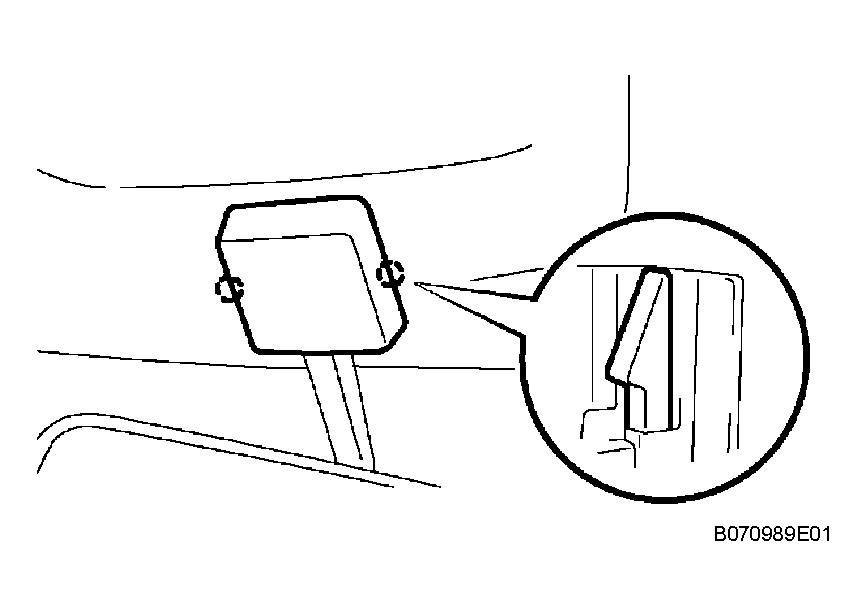

Inner Rear View Mirror: Removal
REMOVE INNER REAR VIEW MIRROR ASSEMBLY
Using a screwdriver, detach the claws and mirror cover.
HINT:
Tape the screwdriver tip before use.
Remove the 2 screws and mirror.
Fig 1: Removing Inner Rear View Mirror Assembly

Courtesy of © TOYOTA, LICENSE AGREEMENT TMS1002